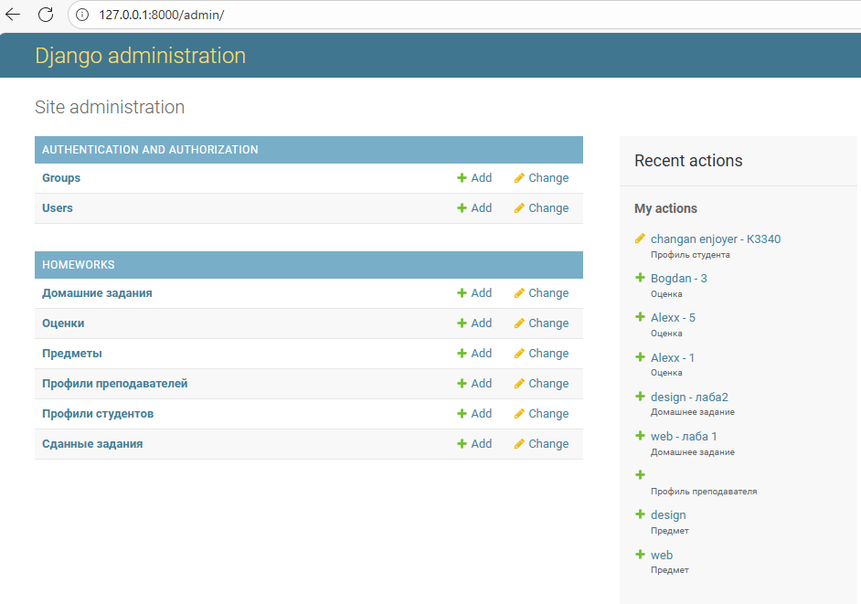
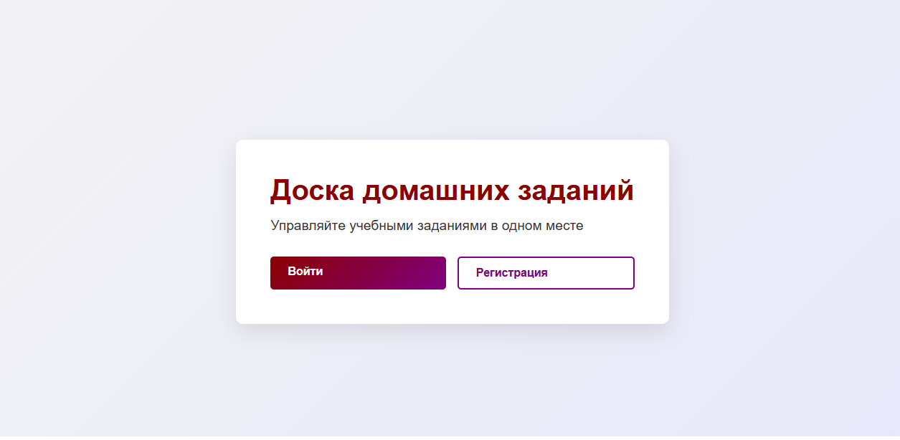
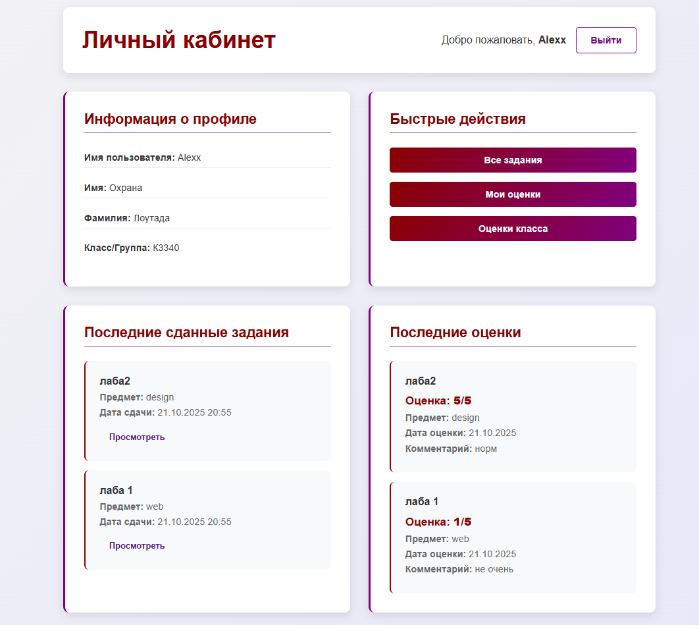
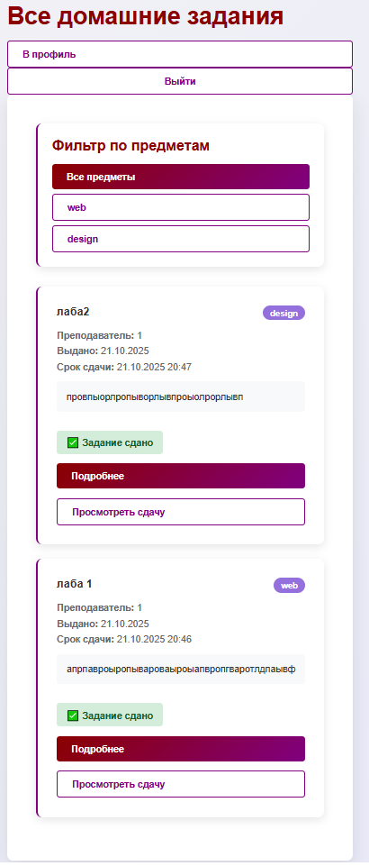
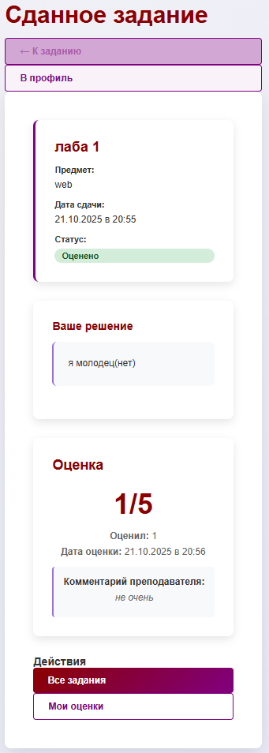
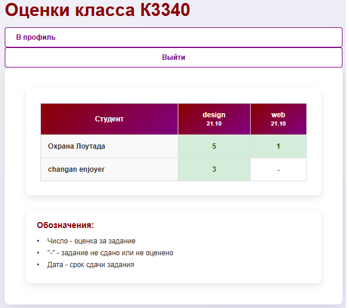

Система управления домашними заданиями
Задание:
Система должна отображать информацию о домашних заданиях: предмет, преподаватель, дата выдачи, срок выполнения, текст задания, информация о штрафах. Необходимо реализовать следующий функционал: - Регистрация новых пользователей с указанием класса/группы - Просмотр домашних заданий по всем дисциплинам со сроками выполнения и описанием - Сдача домашних заданий в текстовом виде с возможностью редактирования до момента оценки - Администратор (учитель) должен иметь возможность поставить оценку за задание средствами Django-admin - В клиентской части должна формироваться таблица, отображающая оценки всех учеников класса
Ход выполнения
Модели данных
Для начала была спроектирована основа приложения - модели данных, отражающие предметную область:
- Subject хранит информацию о предметах/дисциплинах
- Homework хранит информацию о домашнем задании: предмет, преподаватель, дата выдачи, срок выполнения, текст задания, информация о штрафах
- HomeworkSubmission хранит информацию о сданном задании студентом, включая текст решения и прикрепленные файлы
- Grade хранит информацию об оценке за сданное задание, включая баллы и комментарий преподавателя
- StudentProfile хранит дополнительную информацию о студенте (класс/группа)
- TeacherProfile хранит дополнительную информацию о преподавателе (преподаваемые предметы)
Для связей использовались соответствующие поля: - ForeignKey для связей "многие-к-одному" (задание → предмет, сдача → задание) - OneToOneField для профилей пользователей - ManyToManyField для преподавателей и предметов
def __str__(self):
return f"{self.subject} - {self.title}"
Для понятного отображения сущностей в админ-панели и интерфейсе.
Формы
Были созданы кастомные формы на основе моделей:
- UserRegistrationForm - для регистрации новых пользователей с дополнительным полем "класс/группа"
- HomeworkSubmissionForm - для сдачи домашних заданий с текстовым полем и возможностью прикрепления файлов
class UserRegistrationForm(UserCreationForm):
student_class = forms.CharField(
max_length=20,
required=True,
label='Класс/Группа'
)
def __init__(self, *args, **kwargs):
super().__init__(*args, **kwargs)
for field in self.fields:
self.fields[field].help_text = ''
class Meta:
model = User
fields = ['username', 'first_name', 'last_name', 'email', 'password1', 'password2', 'student_class']
class HomeworkSubmissionForm(forms.ModelForm):
class Meta:
model = HomeworkSubmission
fields = ['submission_text', 'file_attachment']
widgets = {
'submission_text': forms.Textarea(attrs={
'rows': 10,
'placeholder': 'Введите ваше решение здесь...'
}),
}
URL адреса и навигация
Для удобной навигации по сайту была настроена маршрутизация с использованием namespace:
app_name = 'homeworks'
urlpatterns = [
path('', views.homepage, name='homepage'),
path('register/', views.register, name='register'),
path('login/', auth_views.LoginView.as_view(template_name='homeworks/login.html'), name='login'),
path('logout/', auth_views.LogoutView.as_view(), name='logout'),
path('profile/', views.profile, name='profile'),
path('homeworks/', views.homework_list, name='homework_list'),
path('homework/<int:homework_id>/', views.homework_detail, name='homework_detail'),
path('homework/<int:homework_id>/submit/', views.submit_homework, name='submit_homework'),
path('submission/<int:submission_id>/', views.submission_detail, name='submission_detail'),
path('grades/', views.grade_list, name='grade_list'),
path('grades/class/', views.class_grades_table, name='class_grades_table'),
path('teacher/homework/create/', views.create_homework, name='create_homework'),
]
Была реализована логическая навигация между страницами с кнопками "Назад", "В профиль", "Все задания" для удобства пользователей.
Представления
Логика работы приложения реализована с помощью Function Based Views с использованием декораторов для контроля доступа:
- @login_required - для ограничения доступа только авторизованным пользователям
- @user_passes_test - для ограничения функционала создания заданий только преподавателям (staff)
Основные views включают: - homepage - главная страница с разным контентом для авторизованных и неавторизованных пользователей - register - регистрация с автоматическим созданием профиля студента - profile - личный кабинет с общей информацией и быстрыми действиями - homework_list - список всех заданий с фильтрацией по предметам - submit_homework - сдача задания с проверкой на повторную сдачу - grade_list - просмотр оценок с пагинацией - class_grades_table - таблица оценок всего класса - create_homework - создание новых заданий (только для преподавателей)
@login_required
def grade_list(request):
grades_list = Grade.objects.filter(
submission__student=request.user
).select_related('submission', 'submission__homework').order_by('-graded_date')
paginator = Paginator(grades_list, 10)
page_number = request.GET.get('page')
page_obj = paginator.get_page(page_number)
context = {
'page_obj': page_obj,
'average_grade': calculate_average_grade(grades_list),
'total_grades': grades_list.count(),
}
return render(request, 'homeworks/grade_list.html', context)
Панель администратора
Все модели были зарегистрированы в админ-панели Django, что позволяет администраторам и преподавателям легко управлять учебным процессом:
- Создавать и редактировать предметы, задания
- Просматривать сданные работы
- Выставлять оценки с комментариями
- Управлять пользователями и их профилями

Пользовательский интерфейс
Был разработан чистый и интуитивно понятный интерфейс с использованием темно-красной и фиолетовой цветовой схемы:
- Адаптивный дизайн - корректное отображение на разных устройствах
- Визуальные статусы - цветовые индикаторы статуса заданий (сдано/не сдано)
- Пагинация - разбивка списков на страницы для удобства просмотра
- Фильтрация - возможность фильтровать задания по предметам
- Формы с валидацией - понятные сообщения об ошибках и успешных операциях
Ключевые функции
- Система регистрации - регистрация с автоматическим определением роли (студент/преподаватель)
- Управление заданиями - создание, просмотр, сдача заданий
- Система оценивания - прозрачное выставление оценок через админ-панель
- Таблица успеваемости - сравнительная таблица оценок всего класса
- Контроль сроков - отображение дедлайнов и информации о штрафах за просрочку





Вывод
В ходе лабораторной работы была успешно разработана полнофункциональная система управления домашними заданиями на Django. Были реализованы все требуемые функции: регистрация пользователей, просмотр и сдача заданий, система оценивания и визуализация успеваемости.
Особое внимание было уделено удобству интерфейса и логической связности всех страниц приложения. Система демонстрирует эффективное использование возможностей Django ORM, системы аутентификации и шаблонов для создания современного веб-приложения.
В процессе работы были освоены навыки проектирования моделей данных, создания кастомных форм, настройки прав доступа и разработки пользовательского интерфейса с учетом требований юзабилити.